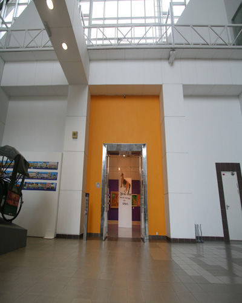

Gallery 2C

About Gallery 2C
The children’s gallery is a gallery exhibiting artworks by children.
Among the activities carried out are:
- Find the Similarities – Selected Portrait Photography
The collection of 539 photography artworks is the collection of the National Visual Arts Development Board, presented as a gift by Dato’ Loke Wan Tho in 1963, during his tenure as a member of the first Board of Trustee of the National Visual Arts Development. A total of six portrait photography artworks were selected and exhibited at the Interactive Area of Gallery 2C. - Kasihnya Ibu (A Mother’s Love) Supplementary Exhibition
(April – June)
The Kasihnya Ibu (A Mother’s Love) Exhibition is a special exhibition in conjunction with the 2011 Mother’s Day. Among the interactive activities is the creation of ibuku (my mother) and anakku (my child) portraits, D.I.Y corner and I am a poet. - The U-Wei Angkat Saksi Exhibition
Will be held in Gallery 2C from 8 to 17 July 2011. - The Sulaiman Esa Solo Exhibition
Will be held at Gallery 2C (1 October – December 2011). - Main-main (At Play) Project
An interactive programme/project in the form of soft sculptural installations, from 11 November 2011 – 11 January 2012.